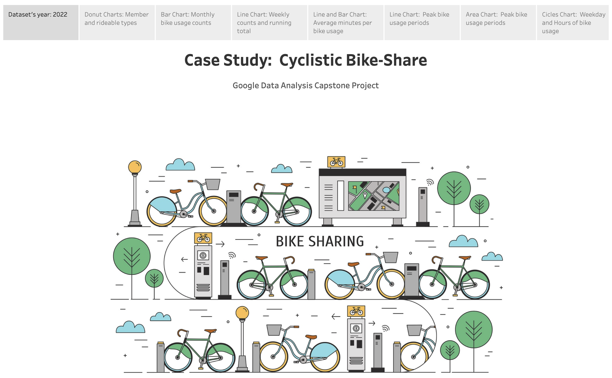
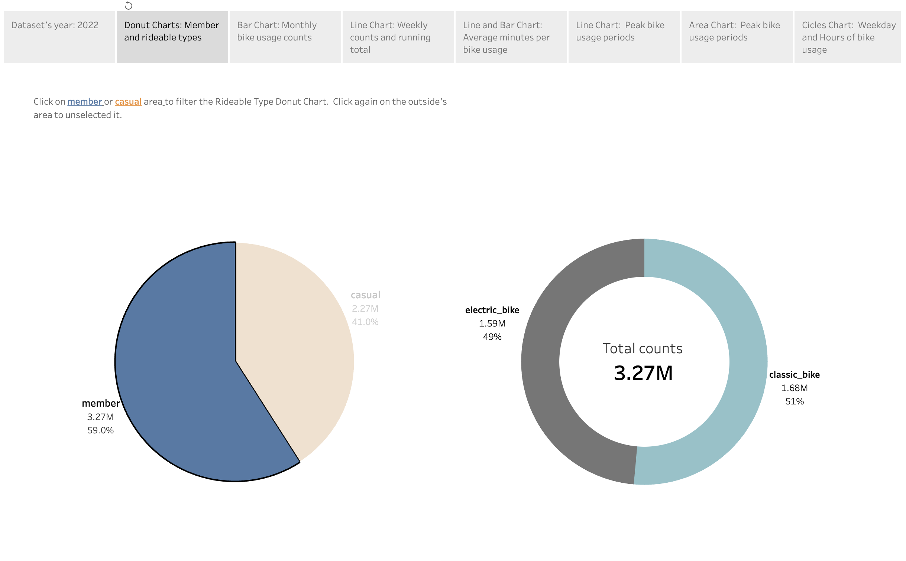
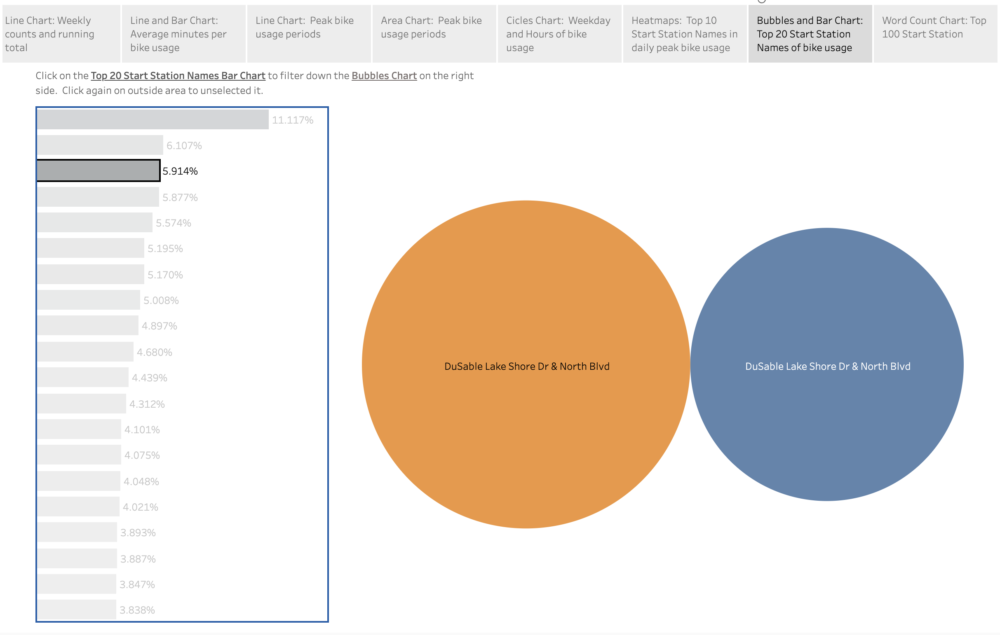
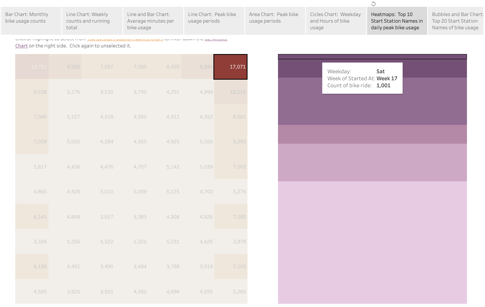

📊 Interactive Dashboard

This project analyzes bike share usage trends using Tableau to uncover rider behavior, commuting patterns, station demand, and operational insights.
The dashboard was designed to support data-driven decision-making through interactive visual storytelling.
| Tool | Purpose |
|---|---|
| Tableau | Dashboard visualization |
| SQL | Query Databases |
| Excel | Data cleaning |
| CSV Dataset | Source data |




Bike usage increases by ~40% during 7–9 AM and 5–7 PM commute windows.
rides tend to have longer durations, suggesting more leisure-oriented customer behavior.
Several stations consistently experience higher traffic volume, indicating opportunities for inventory optimization.
Ride frequency increases significantly during warmer months, highlighting seasonal demand fluctuations.
Email: wywuian@gmail.com
LinkedIn: View Profile
GitHub: github.com/Akeeda